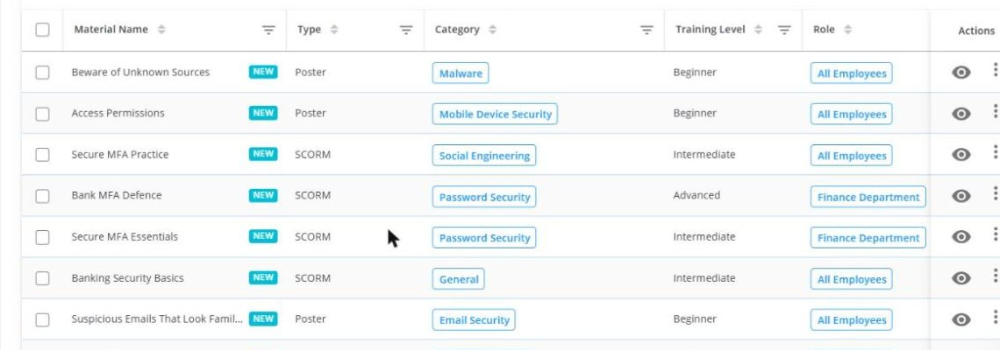
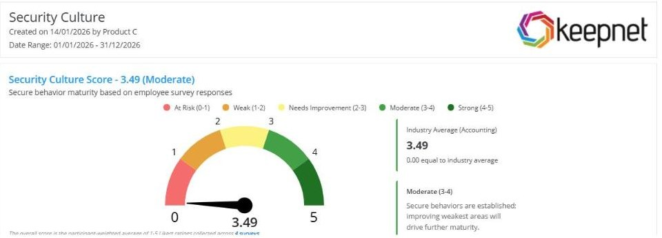

Trusted by security teams around the world


Most programs measure who finished a course. Keepnet measures who is still clicking, on email, SMS, voice, QR code and callback, then assigns the training for that exact behavior in the person's own language.
No credit card. See your own risk data in the first session.
Not. Canli formda 5 Eylul gecesi zorunlu alan sayisi 8 den 5 e indirildi: telefon numarasi ve kaynak sorusu istege bagli oldu, ulke zorunlu birakildi cunku HubSpot ta iki is akisi satis temsilcisi atamasini o alandan yapiyor. Ayrica cerez rizasi reddedildiginde reCAPTCHA yuklenmeme sorunu giderildi.
The measurement problem
The two numbers that most programs report are not the two numbers that decide whether an attack succeeds.
What makes Keepnet different
Each one below is a capability you can see in the product on the first call, not a claim.
One button in Outlook and Gmail, and a mobile app that reports a suspicious SMS or a suspicious call into the same queue as email.
Available on the App Store todayMaterial is filtered by behaviour, role, category, level, duration, language, compliance framework and vendor before it is assigned.
Ten filters, applied automaticallyThe trigger is a failed simulation or a missed report, not a date in the compliance calendar.
Assignment within minutes of the failureThe agent proposes the campaign, the audience and the follow-up training. You either let it run or hold every action for approval.
Pending approvals queue in the dashboardContent and scheduling follow behavioural science, with spaced microlearning instead of one long annual session.
Behavioral Training Series in the library89 languages and locales, including nine English variants and separate Canadian, Belgian and Swiss French.
Counted in the platform, not estimatedA phishing lure that works in Sao Paulo is not the lure that works in Osaka. Scenarios and training are localised, not run through a translator.
Locale-specific variants, not one master fileOver 10,000 items: training modules, learning paths, posters, infographics, screensavers and surveys, plus your own SCORM content.
Six material types in one libraryThe newest piece. Employees report a smishing text or a vishing call from their phone, and it lands in the same analyst queue.
NewHow it works
Three steps, and the third one is the one boards ask about.

Ayni tabloda rol, seviye ve kategori yan yana: Finance Department ileri seviye, tum calisanlar baslangic seviyesi.

AI agents
Most platforms give you an AI that writes an email. Keepnet gives you an agent that can plan and run the programme, with a switch that decides how much rope it gets.
Time to value
There is nothing to install before you can test. Import the target list, pick a scenario per channel, schedule it. The reporting add-in and the mobile app roll out in parallel, they are not a prerequisite.
The library
A big library is only an asset if the right item reaches the right person. Every material carries the metadata that makes automatic assignment possible.
The nine English builds are United States, United Kingdom, Australia, Canada, India, Ireland, New Zealand, Nigeria and South Africa. Each is a separate build, not one file run through a translator.
| Filter | What you can narrow by | Why it matters |
|---|---|---|
| Role | IT, executives, new starters, finance, HR, marketing, sales, production, purchasing | A finance clerk and a developer do not need the same module |
| Behaviour | The specific action that failed | This is what turns a simulation result into an assignment |
| Level | Beginner, intermediate, advanced | Repeat offenders escalate instead of repeating |
| Duration | From one minute upward | A one-minute refresher lands where a 40-minute course does not |
| Compliance | ISO/IEC 27001, GDPR, PCI, HIPAA, DORA and more | Auditors ask for coverage by framework, not by course name |
| Language | 89 languages and locales | People do not change behaviour in a second language |
Every channel, one programme
Attackers moved to the phone and the handset. Most awareness programmes did not. In Verizon's own simulation data the phone-centric median failure rate is roughly 40% higher than the email median.
| Channel | Simulate | Report from |
|---|---|---|
| Yes | Outlook and Gmail add-in | |
| SMS | Yes | Mobile app |
| Voice | Yes | Mobile app |
| QR code | Yes | Outlook and Gmail add-in |
| Callback | Yes | Mobile app |
| MFA capture | Yes | Reported as a phishing attempt |
Source: Verizon, 2026 Data Breach Investigations Report, p. 50. Median simulation click rate is near 1.4% on email and near 2% on phone-centric tests.

One risk score per channel, produced in a single workflow.

Reporting
The same data, shaped for two very different audiences.
Compliance
Filter the library by framework and export the coverage. These are filters in the product, not a marketing list.
Fits the stack you already run
Every reported message is checked against 20+ threat intelligence and sandbox sources, then classified, before it reaches the queue.
Proof
Estimated annual saving attributed to the awareness programme after moving to behaviour-based assignment.
Improvement in reporting and reduction in risky action across the first year of the programme.
Value of the incidents prevented over the measured period in a retail environment.
Rakamlar mevcut vaka sayfalarindan alindi, yayin oncesi tek tek dogrulanacak.
FAQ
A completion-based programme measures whether people finished a course. Keepnet measures whether people still fail a live simulation, on five channels, and assigns training from that result. The reported metric is a risk score per department and per person, not a completion percentage.
89 languages and locales. That count includes locale variants that are built separately rather than translated, such as nine English variants and separate Canadian, Belgian and Swiss French.
Yes. The Keepnet Reporter is a button in Outlook and Gmail for email, and a mobile app for SMS and voice. All three land in the same analyst queue, so a smishing text and a phishing email are triaged in one place.
Yes. You can upload your own SCORM packages alongside the Keepnet library, tag them with the same metadata, and have them assigned automatically by role, behaviour and framework.
Only if you let them. The agent can run fully autonomously, or every recommended action can be held in a pending approvals queue until a human signs it off. The dashboard shows executed and pending actions side by side.
Yes. Reported mail is enriched through 20+ threat intelligence, sandbox and reputation sources before an analyst opens it, and results can be pushed to your existing SIEM or SOAR.
Pricing is per user and depends on the modules you run. Current plans and per-user pricing are on the pricing page.
Thirty minutes. We run a baseline on your channels, show the assignment logic, and you keep the result whether or not you buy anything.
Book a 30-minute demo